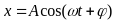
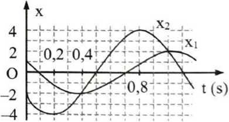

📋 Quy định làm bài
- Thời gian: 45 phút. Còn 10 phút hệ thống nhắc; hết giờ có thêm 5 phút gia hạn rồi tự động nộp.
- Bài làm ở chế độ toàn màn hình. Chuyển tab, mất focus, thoát toàn màn hình đều bị ghi nhận và báo cho giáo viên.
- Không dùng chuột phải, sao chép/dán, phím tắt. Trợ lý AI chỉ mở sau khi nộp bài. Phần tự luận: AI gợi ý điểm, giáo viên duyệt điểm chính thức.
PHẦN I. Câu trắc nghiệm nhiều phương án lựa chọn
Mỗi câu có 4 phương án, chỉ chọn một đáp án đúng (0,25 điểm).
1
Dao động điều hòa là dao động tuần hoàn trong đó
2
Một vật dao động điều hòa theo phương trình $x = A\cos(\omega t + \varphi)$ ($\omega > 0$). Tần số góc của dao động là
3
Vật dao động điều hoà, thời gian vật đi từ biên âm đến biên dương là 0,4 s. Chu kỳ dao động của vật là:
4
Tần số góc có đơn vị là
5
Một vật dao động điều hòa theo phương trình  (cm) (t tính bằng s). Pha của dao động là
(cm) (t tính bằng s). Pha của dao động là
(cm) (t tính bằng s). Pha của dao động là6
Độ lệch cực đại so với vị trí cân bằng gọi là
7
Vật dao động điều hòa với biên độ, tần số và pha ban đầu lần lượt là A, f, φ. Đại lượng luôn dương trong ba đại lượng trên là
8
Một chất điểm dao động điều hòa với phương trình  (cm). Li độ của vật khi pha dao động bằng
(cm). Li độ của vật khi pha dao động bằng  là
là
(cm). Li độ của vật khi pha dao động bằng là9
Trong dao động điều hòa thì nhóm đại lượng nào sau đây không thay đổi theo thời gian?
10
Một chất điểm dao động điều hòa có quỹ đạo là một đoạn thẳng dài 30 cm. Biên độ dao động của chất điểm là
11
Một chất điểm dao động điều hòa trong 10 dao động toàn phần đi được quãng đường 120 cm. Quỹ đạo của dao động có chiều dài là
12
Một vật dao động điều hòa theo phương trình

. Vận tốc của vật được tính bằng công thức13
Trong dao động điều hòa gia tốc biến đổi
14
Một chất điểm dao động điều hòa với phương trình  (cm). Lấy
(cm). Lấy  . Gia tốc của chất điểm tại li độ x = 10 cm là
. Gia tốc của chất điểm tại li độ x = 10 cm là
(cm). Lấy . Gia tốc của chất điểm tại li độ x = 10 cm là15
Một con lắc lò xo gồm vật nhỏ khối lượng  và lò xo nhẹ có độ cứng
và lò xo nhẹ có độ cứng  đang dao động điều hòa theo phương nằm ngang với biên độ
đang dao động điều hòa theo phương nằm ngang với biên độ  . Mốc thế năng ở vị trí cân bằng. Khi vật có li độ
. Mốc thế năng ở vị trí cân bằng. Khi vật có li độ  thì động năng của con lắc là
thì động năng của con lắc là
và lò xo nhẹ có độ cứng đang dao động điều hòa theo phương nằm ngang với biên độ . Mốc thế năng ở vị trí cân bằng. Khi vật có li độ thì động năng của con lắc là16
Một vật nhỏ khối lượng 100 g dao động theo phương trình  (x tính bằng cm, t tính bằng s). Động năng cực đại của vật bằng
(x tính bằng cm, t tính bằng s). Động năng cực đại của vật bằng
(x tính bằng cm, t tính bằng s). Động năng cực đại của vật bằng17
Dao động dưới tác dụng của ngoại lực biến thiên điều hoà $F = F_0\sin(\omega t + \varphi)$ gọi là
PHẦN II. Câu trắc nghiệm đúng sai
Trong mỗi ý a), b), c), d) chọn Đúng hoặc Sai. Đúng 1 ý: 0,1 · 2 ý: 0,25 · 3 ý: 0,5 · 4 ý: 1,0 điểm.
1
Pit-tông bên trong động cơ ô tô dao động lên và xuống khi động cơ ô tô hoạt động. Dao động này được coi là dao động điều hòa với phương trình li độ của pit-tông là $x = 4\cos\left(4\pi t - \frac{\pi}{3}\right)$ (cm, s).
a) Thời gian để pit-tông thực hiện được 1 dao động toàn phần là 0,5 s.
b) Khi pit-tông lên đến vị trí cao nhất vận tốc của nó là 50,26 cm/s.
c) Đồ thị biểu diễn vận tốc – thời gian của dao động có dạng elip.
d) Tại thời điểm 0,5 s pha dao động của pit-tông là $\frac{5\pi}{3}$ (rad).
2
 Cho đồ thị li độ theo thời gian của một vật dao động điều hoà như hình vẽ. Lấy $\pi^{2}=10$.
Cho đồ thị li độ theo thời gian của một vật dao động điều hoà như hình vẽ. Lấy $\pi^{2}=10$.a) Biên độ dao động của vật bằng 2 cm
b) Tần số dao động của vật bằng 2,5 Hz
c) Pha ban đầu của dao động là $-\frac{\pi}{2}$ (rad)
d) Tại thời điểm t = 0,2 s gia tốc của vật bằng 0 cm/s$^2$
3
Con lắc lò xo gồm vật nhỏ khối lượng 100 g gắn với một lò xo nhẹ. Con lắc dao động điều hòa theo phương ngang với phương trình $x = 10\cos 10\pi t$ (cm). Mốc thế năng ở vị trí cân bằng. Lấy $\pi^{2} = 10$.
a) Độ cứng của lò xo được tính bằng biểu thức $\omega=\sqrt{\frac{k}{m}}$
b) Khi li độ dao động của vật là 5 cm thì độ lớn vận tốc của vật có giá trị $50\sqrt{30}$ cm/s
c) Cơ năng của con lắc có giá trị là 0,05 J.
d) Phương trình vận tốc của vật có dạng: $v=-100\pi\sin 10\pi t$ (v tính bằng cm/s, t tính bằng s)
4

Dao động của một vật là tổng hợp của hai dao động điều hoà cùng phương có li độ lần lượt là $x_1$ và $x_2$. Đồ thị biểu diễn sự phụ thuộc của $x_1$ và $x_2$ theo thời gian t như hình vẽ (trong đó x tính bằng cm, t tính bằng s).a) Chu kì dao động của vật là 1,6 s
b) Tại thời điểm 0,4 s, hai dao động thành phần có cùng li độ.
c) Độ lệch pha giữa hai dao động thành phần là $\frac{\pi}{3}$ (rad)
d) Hai dao động thành phần có cùng tần số, cùng biên độ dao động
PHẦN III. Câu trắc nghiệm trả lời ngắn
Điền đáp số (có thể dùng dấu phẩy hoặc dấu chấm thập phân). Mỗi câu 0,25 điểm.
1
Một chất điểm dao động điều hòa trong 10 dao động toàn phần đi được quãng đường 120 cm. Quỹ đạo của dao động có chiều dài bằng bao nhiêu cm?
cm
2
Một vật dao động điều hòa phải mất 0,25 s để đi từ điểm có vận tốc bằng không tới điểm tiếp theo cũng như vậy. Khoảng cách giữa hai điểm đó là 36 cm. Tốc độ của vật khi đi qua vị trí cân bằng bằng bao nhiêu cm/s?
cm/s
3
Một chất điểm dao động điều hòa trên trục Ox. Đồ thị bên biểu diễn một phần li độ của chất điểm theo thời gian. Lấy $\pi = 3{,}14$, tốc độ cực đại của chất điểm bằng bao nhiêu cm/s? (Kết quả lấy 1 chữ số thập phân)

cm/s
4
Một vật dao động điều hòa có đồ thị gia tốc theo thời gian như hình vẽ. Lấy $\pi^{2}=10$. Biên độ dao động của vật là bao nhiêu cm? (Kết quả lấy 1 chữ số thập phân)

cm
5
Vật dao động điều hòa theo phương trình $x=4\cos\left( 8\pi t-\frac{\pi}{6}\right)$ (cm). Khoảng thời gian ngắn nhất vật đi từ $x_{1}=-2\sqrt{3}$ cm theo chiều dương đến vị trí có li độ $x_{2}=2\sqrt{3}$ cm theo chiều dương là bao nhiêu giây? (Kết quả lấy 2 chữ số thập phân)
s
6
Động năng và thế năng của một vật dao động điều hòa phụ thuộc vào li độ theo đồ thị như hình vẽ. Biên độ dao động của vật bằng bao nhiêu cm?

cm